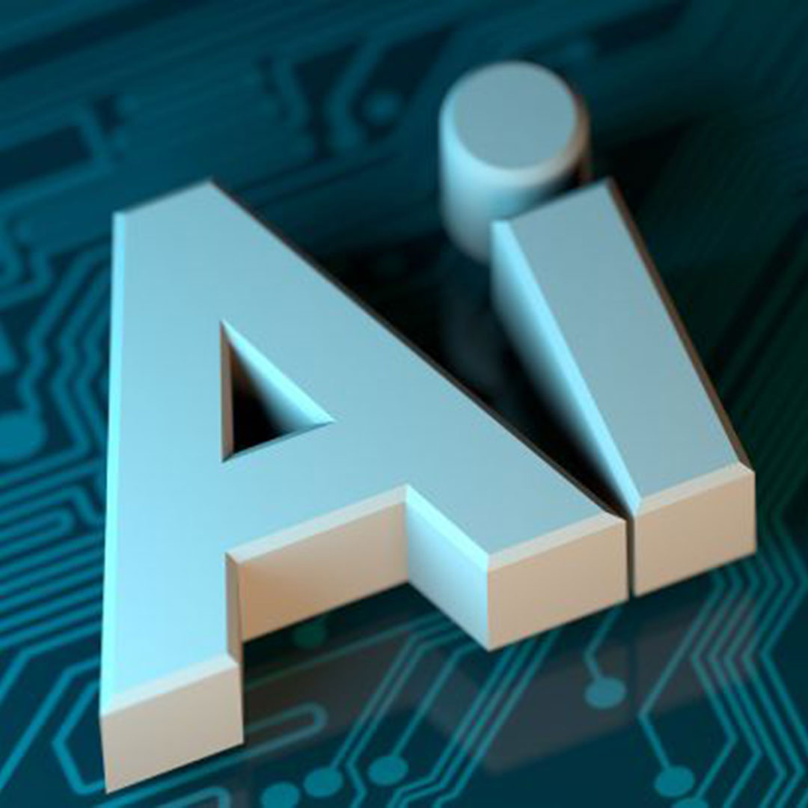

O FUTURO
Você já viu o quão avançado está a tecnologia nos dias atuais?
Nos dias atuais, as inteligências artificiais estão cada vez mais avançadas, realizando tarefas que antes eram exclusivas dos seres humanos.
Nos dias atuais, as inteligências artificiais estão cada vez mais avançadas, realizando tarefas que antes eram exclusivas dos seres humanos.

A Inteligência Artificial deixou de ser uma promessa do futuro para se tornar o pilar central da inovação tecnológica. Ela engloba sistemas capazes de aprender, raciocinar e tomar decisões de forma autónoma. Entender os seus fundamentos é o primeiro passo para acompanhar a transformação digital no mercado.
A colaboração entre equipas humanas e ferramentas automatizadas reduz tarefas repetitivas e otimiza fluxos de trabalho operacionais. A automação inteligente permite focar no planeamento estratégico e na resolução de problemas complexos, acelerando a entrega de resultados.
Com o aumento exponencial do volume de informações digitais, o processamento de dados em tempo real é essencial para a tomada de decisões precisas. Algoritmos avançados conseguem identificar padrões ocultos, estruturar métricas complexas e prever tendências com elevada exatidão.
A evolução da visão computacional e do reconhecimento de padrões permite que sistemas interpretem imagens, dados gráficos e métricas visuais com máxima precisão. Essa tecnologia impulsiona desde a análise preditiva de mercados até ao desenvolvimento de interfaces inteligentes.